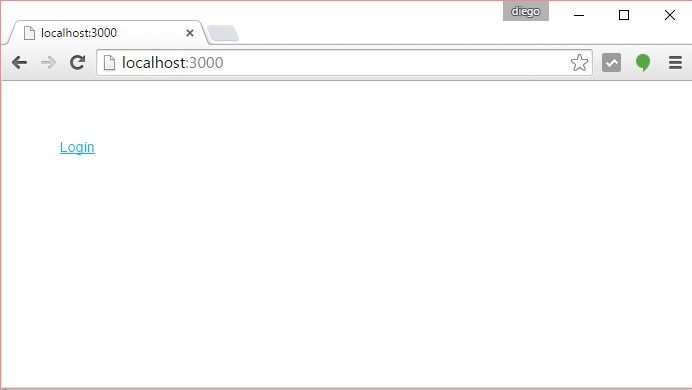
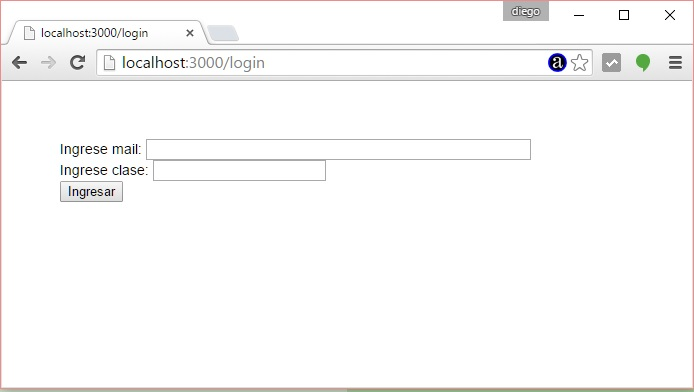
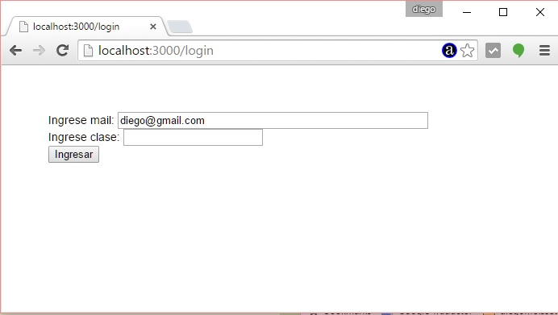

Otro recurso muy común en una web es el tratamiento de cookies. El Framework Express enlaza un módulo llamado "cookie-parser" que nos facilita su creación y consulta en nuestro programa.
Problema
Crear un formulario de login que permita ingresa el mail y la clave de un usuario. Crear luego al presionar el botón submit una cookie llamada "mail" que almacene el mail ingresado por el usuario.
Cada vez que se ingrese al formulario de login si existe la cookie "mail" mostrar su contenido en el control "text" para que el visitante no tenga que ingresarla nuevamente.
Paso 1
Como vamos a utilizar el Framework Express y en conceptos anteriores ya instalamos el 'express-generator' nos posicionamos en el directorio 'c:\ejerciciosnodejs' (o el directorio donde esta almacenando todos sus proyectos) y procederemos a crear nuestra aplicación Node.js utilizando Express y su generador de código:c:\ejerciciosnodejs> express ejercicio24 --hbs
Estamos llamando al programa 'express' y le pasamos dos parámetros, el primero indica el nombre de nuestro proyecto y el segundo el sistema de plantillas que utilizaremos para generar nuestras páginas dinámicas (handlebars)
Ya tenemos creado la carpeta ejercicio24 y dentro de esta los archivos y subcarpetas básicos:
ejercicio24
app.js
package.json
bin
www
public
images
javascripts
stylesheets
router
index.js
users.js
views
error.hbs
index.hbs
layout.hbs
Descendemos a la carpeta ejercicio24 e instalamos todas las dependencias de módulos:
c:\ejerciciosnodejs\ejercicio24>npm install
Cuando llamamos a 'npm install' sin ningún otro parámetro lo que hace es buscar el archivo 'package.json' y proceder a instalar todos los módulos especificados en la propiedad 'dependencies'.
Ahora ya tenemos creado la carpeta 'node_modules' con las 7 carpetas que coinciden con las dependencias especificadas en el archivo json:
body-parser
cookie-parser
debug
express
hbs
morgan
serve-favicon
Podemos ver que ya tenemos el módulo que analizaremos en este concepto: cookie-parser.
Recordemos que hasta ahora hemos creado un esqueleto funcional de una aplicación Node.js utilizando el framework Express y lo podemos ejecutar:
Podemos ejecutar nuestra aplicación mínima creada con el 'express-generador':
c:\ejerciciosnodejs\ejercicio24>node ./bin/www
Y ya podemos solicitar al servidor la página raíz del sitio:

Recordemos que otra forma de iniciar a nuestro proyecto en Node.js cuando definimos el archivo package.json:
En lugar de escribir:
c:\ejerciciosnodejs\ejercicio24>node ./bin/www
Escribimos:
c:\ejerciciosnodejs\ejercicio24>npm start
Recordemos que en el archivo json hay una propiedad start donde definimos el archivo que inicia nuestra aplicación:
"scripts": {
"start": "node ./bin/www"
},
Paso 2
Ahora tenemos que modificar el archivo index.hbs que se encuentra en la carpeta "views" y disponemos un enlace al formulario de login:
<a href="login">Login</a>
También creamos otra plantilla llamada 'login.hbs' y cuyo contenido es:
<form method="post" action="/login">
Ingrese mail:
<input type="mail" name="mail" size="50" value="{{mail}}">
<br>
Ingrese clase:
<input type="password" name="clave" size="20">
<br>
<input type="submit" value="Ingresar">
</form>
Como vemos en la propiedad value donde se ingresa el mail mostraremos el parámetro "mail" que lo pasaremos cuando carguemos esta plantilla desde el router respectivo.
Paso 3
En el archivo index.js de la carpeta routes procedemos a modificarlo con el siguiente código:
var express = require('express');
var router = express.Router();
/* GET home page. */
router.get('/', function(req, res, next) {
res.render('index');
});
router.get('/login', function(req, res, next) {
if (req.cookies.mail)
res.render('login',{mail:req.cookies.mail});
else
res.render('login');
});
router.post('/login', function(req, res, next) {
res.cookie('mail', req.body.mail,{ expires: new Date(Date.now() + (60*60*24*365*3)) });
var pagina='<!doctype html><html><head></head><body>'+
'<p>Se creo la cookie</p>'+
'<a href="/">Retornar</a></body></html>';
res.send(pagina);
});
module.exports = router;
Veamos como funciona este código, cuando llamamos y accedemos a la raiz del sitio web se captura la ruta:
/* GET home page. */
router.get('/', function(req, res, next) {
res.render('index');
});
Por lo tanto se levanta la plantilla index.hbs y tenemos en el navegador:

Cuando seleccionamos el hipervínculo tenemos que se ejecuta:
router.get('/login', function(req, res, next) {
if (req.cookies.mail)
res.render('login',{mail:req.cookies.mail});
else
res.render('login');
});
Aquí controlamos si ya existe la cookie llamada mail en el atributo cookies del objeto req (la primera vez que accedemos a esta página el if se verifica falso y ejecuta el else donde se carga la plantilla login y no se le envían datos):

Luego de cargar datos por teclado en el formulario y presionar el botón "submit" en nuestro servidor Node.js procedemos a capturar los datos enviados en:
router.post('/login', function(req, res, next) {
res.cookie('mail', req.body.mail,{ expires: new Date(Date.now() + (60*60*24*365*3)) });
var pagina='<!doctype html><html><head></head><body>'+
'<p>Se creo la cookie</p>'+
'<a href="/">Retornar</a></body></html>';
res.send(pagina);
});
Como vemos mediante el método cookie del objeto res creamos una cookie llamada mail y guardamos como valor el dato ingresado en el formulario que lo recuperamos con req.body.mail.
También tenemos que indicar cual es la fecha de expiración de la cookie (es decir en que fecha el navegador no la tiene que informar al servidor Node.js) en nuestro caso la definimos de 3 años.
Ahora si volvemos a ingresar al formulario de login podremos ver que se carga automáticamente el último mail ingresado:

Este proyecto lo puede descargar en un zip con todos los archivos desde este enlace : ejercicio24